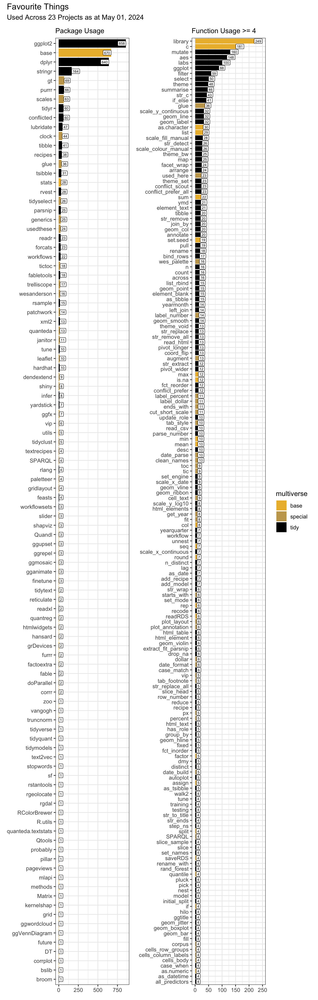

Favourite Things

Each project closes with a table summarising the R tools used. By aggregating the package and function usage across all projects, there’s an opportunity to:
Spot the use of superseded functions like
map_dfrIdentify variable names that conflict with function names, for example, reminding me not to use
dateas a variable name (it’s also a base function), but rather use something more explicit and informative likedate_startordate_observedCheck for usage consistency, e.g.
clock::date_todayversusSys.DateSee where it would be most useful to keep an eye on package version updates
Since starting this in 2017, functions like tidyr’s spread and gather have been superseded by pivot_wider and pivot_longer. Newer packages have emerged like tidyclust, which brings cluster modelling to tidymodels (now used in Finding Happiness in ‘The Smoke’). bslib has brought improvements to the latest shiny app version embedded in Plots Thicken. The paletteer package has put it’s arms around the myriad palette packages out there. And scales’ cut_short_scale assisted with plot labelling.
Most recently, the latest versions of dplyr and purrr have presented a host of enhancements. For example, the .by argument in mutate and friends offers a neat alternative to group_by and ungroup in many situations. And changes in the map_ family introduce list_rbind and associates with map_dfr, for example, now superseded.
theme_set(theme_bw())
n <- 4
palette <- "harrypotter::ronweasley2"
cols <- paletteer_c(palette, n = n)
tibble(x = 1:n, y = 1) |>
ggplot(aes(x, y, fill = cols)) +
geom_col(colour = "white") +
geom_label(aes(label = cols |> str_remove("FF$")),
size = 4, vjust = 2, fill = "white") +
annotate(
"label",
x = (n + 1) / 2, y = 0.5,
label = palette,
fill = "white",
alpha = 0.8,
size = 6
) +
scale_fill_manual(values = as.character(cols)) +
theme_void() +
theme(legend.position = "none")We need to web-scrape all the projects on this web-site, starting by grabbing the url for each one.
Then we can extract their package and function usage tables.
table_df <- map(urls, \(x) {
x |>
read_html() |>
html_elements("#r-toolbox , kable-table") |>
html_table()
}) |>
list_flatten() |>
list_rbind() |>
clean_names(replace = c("io" = "")) |>
select(package, functn) |>
drop_na()Separation of tidyverse and non-tidyverse packages may be achieved by using the likes of tidyverse_packages which lists all packages in the tidyverse.
tidy <-
c(
tidyverse_packages(),
fpp3_packages(),
tidymodels_packages()
) |>
unique()
tidy_df <- table_df |>
separate_rows(functn, sep = ";") |>
separate(functn, c("functn", "count"), "\\Q[\\E") |>
mutate(
count = str_remove(count, "]") |> as.integer(),
functn = str_squish(functn)
) |>
count(package, functn, wt = count) |>
mutate(multiverse = case_when(
package %in% tidy ~ "tidy",
package %in% c("base", "graphics") ~ "base",
TRUE ~ "special"
))Then we can summarise usage.
pack_df <- tidy_df |>
count(package, multiverse, wt = n) |>
mutate(name = "package")
fun_df <- tidy_df |>
count(functn, multiverse, wt = n) |>
mutate(name = "function")
n_url <- urls |> n_distinct()
packfun_df <- pack_df |>
bind_rows(fun_df) |>
arrange(desc(n)) |>
mutate(
packfun = coalesce(package, functn),
name = fct_rev(name),
.by = name
)Use of Quarto’s {{< include _foobar.qmd >}} has enabled the lifting, standardisation and simplification of the toolbox code. Previously this code (essentially replicated across the 20 projects) inflated the usage numbers.
With the latest versions of dplyr and purrr, usage of group_by, ungroup and map_dfr has fallen away whilst list_rbind has newly appeared.
p1 <- packfun_df |>
filter(name == "package") |>
ggplot(aes(fct_reorder(packfun, n), n, fill = multiverse)) +
geom_col(show.legend = FALSE) +
coord_flip() +
geom_label(aes(label = n), hjust = "inward", size = 2, fill = "white") +
scale_fill_manual(values = cols[c(2, 3, 4)]) +
labs(x = NULL, y = NULL,
subtitle = glue("Package Usage"))
min_n <- 5
p2 <- packfun_df |>
filter(name == "function", n >= min_n) |>
ggplot(aes(fct_reorder(packfun, n), n, fill = multiverse)) +
geom_col() +
coord_flip() +
geom_label(aes(label = n), hjust = "inward", size = 2, fill = "white") +
scale_fill_manual(values = cols[c(2, 3, 4)]) +
labs(x = NULL, y = NULL,
subtitle = glue("Function Usage >= {min_n}"))
p1 + p2 +
plot_annotation(
title = glue(
"Favourite Things from {n_url} Projects as at ",
"{date_format(date_today('Europe/London'), format = '%B %d, %Y')}"
)
)
This last code chunk generates the word cloud for use as the feature image for this project.
set.seed = 123
packfun_df |>
mutate(angle = 45 * sample(-2:2, n(),
replace = TRUE,
prob = c(1, 1, 4, 1, 1))) |>
ggplot(aes(
label = packfun,
size = n,
colour = multiverse,
angle = angle
)) +
geom_text_wordcloud(
eccentricity = 1,
seed = 789
) +
scale_size_area(max_size = 20) +
scale_colour_manual(values = cols[c(2, 3, 4)]) +
theme_void() +
theme(plot.background = element_rect(fill = cols[1]))
R Toolbox
This project’s code too should be included in my “favourite things”.
| Package | Function |
|---|---|
| base | as.character[1]; as.integer[1]; c[8]; library[11]; sample[1]; unique[1] |
| clock | date_today[1] |
| dplyr | filter[2]; arrange[1]; bind_rows[1]; case_when[1]; coalesce[1]; count[4]; desc[1]; mutate[6]; n_distinct[1]; pull[1]; select[1]; transmute[1] |
| forcats | fct_reorder[2]; fct_rev[1] |
| fpp3 | fpp3_packages[1] |
| ggplot2 | aes[7]; annotate[1]; coord_flip[2]; element_rect[1]; geom_col[3]; geom_label[3]; ggplot[4]; labs[2]; scale_colour_manual[1]; scale_fill_manual[3]; scale_size_area[1]; theme[2]; theme_bw[1]; theme_set[1]; theme_void[2] |
| ggwordcloud | geom_text_wordcloud[1]; ggwordcloud[1] |
| glue | glue[4] |
| janitor | clean_names[1] |
| paletteer | paletteer_c[1] |
| patchwork | plot_annotation[1] |
| purrr | list_flatten[1]; list_rbind[1]; map[1] |
| rvest | html_attr[1]; html_elements[2]; html_table[1]; read_html[2] |
| stringr | str_c[1]; str_remove[2]; str_squish[1] |
| tibble | as_tibble[1]; tibble[1] |
| tidymodels | tidymodels_packages[1] |
| tidyr | drop_na[1]; separate[1]; separate_rows[1] |
| tidyverse | tidyverse_packages[1] |